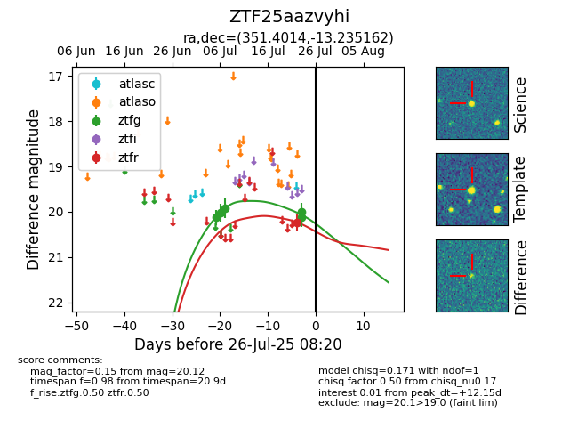

Target ZTF25aazvyhi at 2025-07-26 08:20, see:
FINK: fink-portal.org/ZTF25aazvyhi
Lasair: lasair-ztf.lsst.ac.uk/objects/ZTF25aazvyhi
ALeRCE: alerce.online/object/ZTF25aazvyhi
alt names
ZTF25aazvyhi (ztf,fink)
coordinates:
equatorial (ra, dec) = (351.4014,-13.23516)
galactic (l, b) = (63.3822,-65.60159)
photometry
last ztfg=20.12, ztfr=20.23
5 ztfg, 1 ztfr detections
